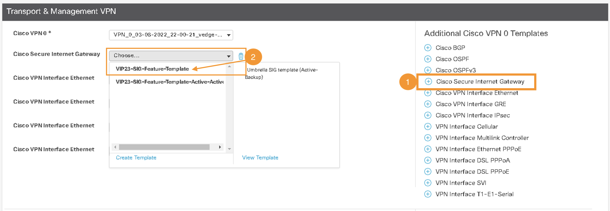
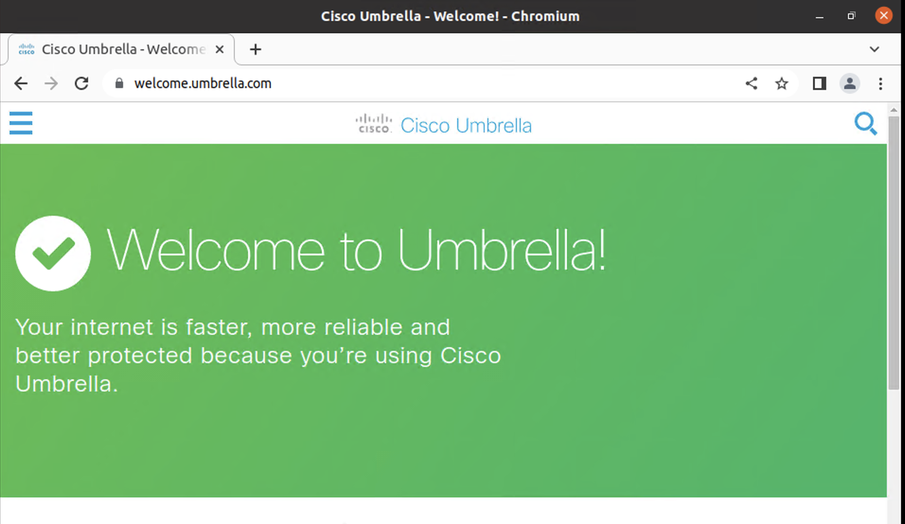

Task 5: Umbrella integration with Site-300
In Task 5, we focus on integrating Site-300 with Cisco Umbrella. This integration is a crucial step in enhancing the network's security posture. By establishing this connection, Site-300 will form both active IPSec tunnels with the Umbrella cloud. As a result, IP traffic from Site-300, particularly for VPN-10, will be routed through Umbrella, allowing for external access (such as Public Cloud, SaaS applications, and the Public Internet) while leveraging Umbrella's security services. This integration not only ensures more secure internet access but also paves the way for future enhancements, including the monitoring and enforcement of security capabilities directly from the Umbrella cloud.
Step 1 - Umbrella Organization ID
Objective: Obtain the Umbrella Organization ID (Org ID) necessary for integrating Umbrella with Cisco SD-WAN.
1. Accessing the Umbrella Dashboard:
- Log in to the Umbrella Dashboard on the RDP session (jumphost) by clicking the
Umbrella SSObookmark in Google Chrome Browser. This will automatically open the Umbrella dashboard using single-sign-on.
| Note: |
|---|
| Click through any security warning to ignore the certificate if prompted. |
2. Extracting the Org ID:
- The Umbrella organization (Org) is a distinct entity with its own dashboard. The
Org IDis a unique number used to identify each organization and is essential for integrating Umbrella with Cisco SD-WAN. - Once logged into the Umbrella dashboard, extract the
[Org ID]from the URL in the address bar. TheOrg IDappears in the following format:
https://dashboard.umbrella.com/o/[Org ID]/#/...
- Here is an example to illustrate where the
Org IDis located in the URL:
Important: The Org ID is required for later configuration steps in vManage for Umbrella SIG integration.
Step 2 - Umbrella API Key
Objective: Generate an API token (Key, Secret) from the Umbrella dashboard for use in SD-WAN (vManage) configurations.
1. Navigating to API Keys Page:
-
After logging into the Umbrella dashboard, navigate to Admin > API Keys.
-
Then click on
Legacy Keys.
2. Generating API Token:
- Select
Umbrella Managementand then click onGenerate Tokento create an APIKeyandSecret.
3. Saving API Credentials:
- Copy both the
KeyandSecretto a notepad for later use.
| Important Note: |
|---|
Ensure to copy both the Key and Secret as they are displayed only once and will not be visible again. |
Step 3 - Update SIG Feature Template on vManage
Objective: Add the Umbrella API credentials (Key, Secret) and Org ID in the vManage configurations to automate IPSec tunnel configurations.
1. Accessing Feature Templates in vManage:
- In vManage, navigate to Configuration > Templates.

- Click on the
Feature Templatestab.
2. Editing the SIG Feature Template:
- Type
sigin the search bar and find the template namedVIP23-SIG-Feature-Template. - Click the three dots (
...) at the right side of this template and selectEdit.
3. Creating Cisco SIG Credentials Template:
- Click on "Click here to create - Cisco SIG Credentials Template".

- Enter the Umbrella
Org ID,Key, andSecretpreviously saved.
4. Saving and Updating Template:
- Click
Saveand thenUpdateat the bottom of the page to save the changes.
After successfully saving the Umbrella API Token credentials, the next step will involve applying this Feature template to the Site300-cE1 Device template, enabling the establishment of IPSec tunnels between Umbrella SIG and Site300-cE1.
Step 4 - Apply SIG Feature Template on vManage
Objective: Apply the previously saved SIG template to the Site300-cE1 device for Umbrella SIG integration, which includes setting up IPSec tunnels between Site300 and the Umbrella cloud.
1. Navigating to Device Templates in vManage:
- In vManage, go to Configuration > Templates and then click on
Device Templates.
2. Editing Site300-cE1 Device Template:
- Search for the Site300-cE1 device in the
Descriptionfield. - Click on the three dots (
...) at the right side of Site300-cE1 and selectEdit.
3. Accessing Transport and Management VPN Section:
- Once the
Device Templateis open, click on theTransport and Management VPNto navigate to that section.
4. Adding Cisco Secure Internet Gateway Template:
- Click on
Cisco Secure Internet Gatewayto add this template to the device. - After adding it, select
VIP23-SIG-Feature-Templatefrom the drop-down menu. 
5. Confirming Cisco SIG Credentials:
- Scroll down to the
Additional Templatessection. - Ensure that the Cisco SIG Credentials are set to
Cisco-Umbrella-Global-Credentials.
6. Updating and Configuring Device Template:
- Click
Updateon this page. - Then click
Nextto proceed with the configuration.
- Click
Configure Devicesat the bottom of the page to push the configuration from vManage to the cEdge device.
7. Verifying Configuration Success:
- Wait and verify that the Config-Push from vManage to the cEdge device is successful
Result: Upon completion, the IPSec tunnels for integrating Site-300 cEdge with the Umbrella cloud are now configured.
Step 5 - Verify SIG Tunnels
Objective: Confirm that the IPSec tunnels between the Umbrella cloud and SD-WAN Site-300 are operational.
1. Accessing the Umbrella Dashboard:
- If not already open, launch Google Chrome on the RDP session and click on the
Umbrella SSObookmark to open the Umbrella dashboard.
2. Navigating to Network Tunnels:
- Once logged in to the Umbrella Dashboard, go to Deployments > Core Identities > Network Tunnels.
3. Checking Tunnel Status:
- Initially, the tunnels might be in the
Unestablished Tunnelsstate. - It may take a few minutes for the tunnels to become Active. Check for the presence of 2 Active Tunnels.

4. Verifying Protection on Ubuntu VM:
- Using the mRemoteNG application, launch a console session for the
Site300-Ubuntu-VPN10VM. - Inside the VM, open the Web Browser and navigate to
welcome.umbrella.com. This step is to verify if Site-300 is protected by Umbrella.
5. Understanding the Failure:
- The failure occurred because the traffic from the SD-WAN site is still being routed through the normal interface, not through the IPSec tunnels.
- To address this, we need to create a
Service Routeto redirect traffic from the SD-WAN site towards the Umbrella Cloud on newly created IPSec tunnels. This action will be covered in the next step.
Step 6 - Redirect Traffic to SIG Tunnels
Objective: Create a Service Route to SIG for redirecting traffic from VPN-10 on Site-300 towards the Umbrella cloud.
1. Accessing Feature Templates in vManage:
- Navigate to Configuration > Templates in vManage, and then click on
Feature Templates.
2. Edit the VPN-10 Site300 Template:
- Type
vpn_10_site300_ce1in the search bar. From the search results, locate this template. - Click the three dots (
...) on the right side of this template and selectEdit.
3. Configuring Service Route:
- On the template editing page, click on
Service Route.
- Click on
New Service Route. Add a route with the following settings: Prefix:0.0.0.0/0Service:SIG(default setting)- Click
Addand thenUpdateat the bottom of the page.
4. Applying the Configuration:
-
Click
Nextand thenConfigure Devicesto push the configuration. -
Wait and verify that the Config-Push from vManage to the cEdge device is successful.

5. Verifying Traffic Redirection to Umbrella:
- Using mRemoteNG, relaunch the console session of the Ubuntu VM
Site300-Ubuntu-VPN10. - Open the Chromium Web Browser on this VM and navigate to
welcome.umbrella.com. The messageWelcome to Umbrellaindicates successful protection by Umbrella. 
6. Checking Traffic Routing:
- In the console session of the Ubuntu VM
Site300-Ubuntu-VPN10, run the command:
traceroute 8.8.8.8
Observe the differences in the traceroute output compared to the earlier task. Consider the hop count and other routing details.